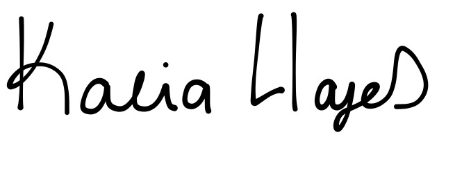

Hi! I'm glad you found me. This website is currently under construction but I've left some info about myself here and there. Get to know me. Feel free to connect!
Dallas based Information Technology and Systems undergrad with stomping grounds at UT Dallas.
Data. Design. Dallas.
Hello! My name is Kalia Hayes and I'm an Information Technology and Systems junior with a concentration in Business Intelligence and Data Analytics at the University of Texas at Dallas. In my time at UTD, I've immersed myself in all things business and data driven by taking courses such as Web Development for Business Applications, Web Analytics, and Java OOP. I've also held memberships in various UTD clubs including Women in Business and Technology, Undergraduate Success Scholars, and the UI/UX Club.
In addition to my UTD curriculum and extracurricular activities, I partake in various highly rated open online courses(thank you Coursera, Udacity, and EdX) around the web in order to increase my exposure to BI and data analytics. I also enjoy testing my growing abilities using open online databases and communities(another thank you to Data.world and Kaggle.com).
Apart from my studies, I've held at least one job during my entire UTD career. Since my freshman year, I've worked for UTD as an inventory clerk and assist in updating and maintaining UTD's asset databases. Also, I currently work as a remote based social media manager for four restaurants and one dairy farm. Through SMM, I have an created an environment where I utilize my business focused analytical skill set on a daily basis to drive sales and grow brand loyalty and awareness on various social media platforms.
I look forward to sharing much more about myself with you in the near future! Have a look at some of my abilities and current concentrations below.
Oh, and
#CowboysNation

Below is an overview of my skills and assets that I have learned throughout my coursework, side projects, and naturally with life.
Feel free to reach out to me with any questions, comments, or concerns. Likewise, this is a good option for a causual conversation, too. Get to know me!